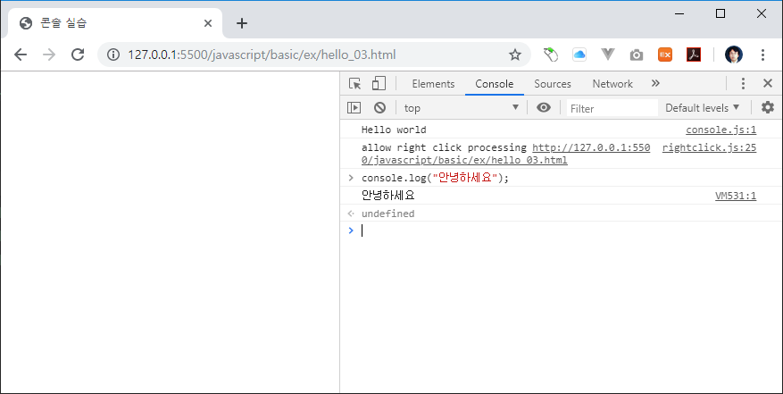

콘솔
자바스크립트를 이용하여 브라우저 화면에 hello world를 출력해 보았습니다.
디버그
최근에는 자바스크립트의 동작이나 내용을 확인할때, 브라우저 화면 대신에 콘솔이라는 입출력 시스템을 활용하여 테스트 동작을 확인합니다.
핼로우 월드
콘솔에 hello world를 출력해 보도록 합니다.
<!DOCTYPE html>
<html lang="ko">
<head>
<title>콘솔 실습</title>
<script src="console.js"></script>
</head>
<body>
</body>
</html>
console.js 파일을 작성합니다.
console.log("Hello world");
브라우저에서 확인을 합니다.

브라우저 화면에는 아무런 내용이 출력되지 않습니다. F12번 키를 눌러 개발자 도구를 실행합니다.
개발자 도구에서 console텝을 선택합니다.
콘솔텝에서 hello world문자열이 출력되는 것을 확인할 수 있습니다.
콘솔 메시지
콘솔은 자바스크립트에서 제공하는 내장 객체 입니다. 또한 콘솔은 5개의 메소드를 제공합니다.
다음과 같이 콘솔 메소드에 메시지를 입력하면, 입력된 메시지가 콘솔로 출력 됩니다.
console.log(메시지);
콘솔은 프로그램의 동작을 디버그 하거나, 중간의 내용을 확인할때 매우 유용합니다.
debug
console.debug(메시지);
error
console.error(메시지);
info
console.info(메시지);
warn
console.warn(메시지);
메시지 필터링
웹 브라우저 콘솔에서 메시지를 필터링 합니다.
메시지 저장
로그를 파일로 저장합니다.
직접입력
브라우저 콘솔에서 직접 자바스크립트 코드를 작성하여 실행을 할 수도 있습니다.
브라우저 콘솔에서 다음과 같이 입력을 합니다.
console.log("안녕하세요");

입력한 스크립트가 바로 해석되어 실행이 되는 것을 확인할 수 있습니다. 이처럼 콘솔을 이용하면 직접 자바스크립트 코드를 작성하지 않고도, 코드를 실행해 볼 수 있다는 장점이 있습니다.